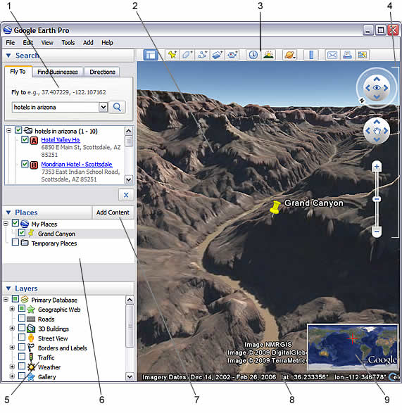
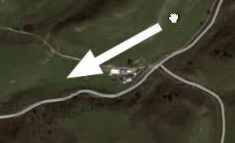
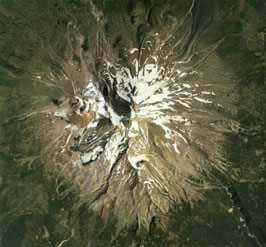
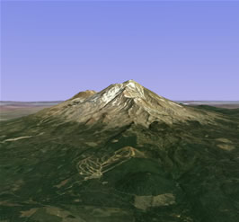

|
|
This user guide describes Google Earth Version 5 and later.
Welcome to Google Earth! Once you download and install Google Earth, your computer becomes a window to anywhere, allowing you to view high-resolution aerial and satellite imagery, photos, elevation terrain, road and street labels, business listings, and more. See Five Cool, Easy Things You Can Do in Google Earth.
You can view a printable version of this user guide (free Adobe Reader required, English only).
|
|
Use the following topics to learn Google Earth basics - navigating the globe, searching, printing, and more:
|
|
For other topics in this documentation, see the table of contents (left) or check out these important topics:
|
The following diagram describes some of the features available in the main window of Google Earth:

Click the following toolbar buttons to...
| Conceal or the display the side bar |
|
|
|
|
|
|
|
|
|
|
|
|
|
|
|
|
|
|
Want to jump in and start having fun with Google Earth? Try any of the the following:
View samples of other things you can see and do in Google Earth.
This version of Google Earth has a number of exciting new features, including:
For information about installing Google Earth, visit the Google Earth Help Center.
To use Google Earth on a Windows PC, you must have at least the following:
To use Google Earth on a Mac, you must have at least the following:
Regarding Linux, Google Earth has been tested on Ubuntu version 6.06, but certainly works on others. Hardware requirements include:
Please make sure your system has properly-configured OpenGL drivers. If Google Earth appears to be slow and unresponsive, it is likely that your system needs different video drivers.
You can change the language displayed in Google Earth. To do this in Windows or Linux:
To change your language on the Mac:
Google Earth Version 5 supports the following languages:
|
|
|
|
In addition to this user guide, Google offers a number of resources that can help you use and enjoy Google Earth. These include:
Note - This section is relevant to Google Earth Pro and EC users.
When you first start Google Earth EC, the Select Server dialog box appears. This enables you to choose the appropriate server settings. Settings in this dialog box include:
To add a database (server) that you can log into in Google Earth EC, click File > Add Database. To log out of a server in Google Earth Pro or EC, choose File > Server Log Out. To log in to a server, choose File > Server Login and choose the settings described above.
Tip - When you add another database (click File > Add Database), Google Earth logs into new database and maintains a connection to the existing database. Using this method, you can view data from up to eight databases simultaneously.
If you have Google Earth Pro or EC installed, you can deactivate this software. When you deactivate Google Earth Pro or EC, the license is removed so you can use the Pro or EC license on another computer.
To deactivate Google Earth Pro or EC, click Help > Deactivate Google Earth Pro/EC license.
Tip - When the Google Earth Pro/EC login and password appear, write these down so you can use them later to activate the software on this or another computer.
You can view fascinating content from the KML Gallery such as 3D models of space satellites, a biography of Bob Marley, a grand prix racing tour, Jane Austen's life and works and much more. To view such content:
Note - The Add Content button only appears in Google Earth version 4.2 and later. However, you can access the aforementioned content in older versions by going to the KML Gallery directly in your web browser.
Tip - Follow a tutorial on this subject or play the video below (English only).
In Google Earth, you see the Earth and its terrain in the 3D viewer. You can navigate through this 3D view of the globe in several ways:
You can also manipulate your view of the earth by tilting the terrain for perspectives other than a top-down view. Finally, you can reset the default view for a north-up, top-down view wherever you are.
To get started navigating with your mouse, simply position the cursor in the middle of the 3D viewer (image of the earth), click one of the buttons (right or left), move the mouse and note what happens in the viewer. Depending upon which mouse button you press, the cursor changes shape to indicate a change in behavior. By moving the mouse while pressing one of the buttons, you can:
The following table describes all the actions you can accomplish using the mouse. See
also Keyboard and Mouse Controls:
| Move the view in any direction (north, south, east, or west) |
To move the view, position the mouse cursor on the viewer and press the LEFT/main
mouse button. Notice that the cursor icon changes from an open hand  You can drag in any direction to reveal new parts of the globe, and you can even drag in circular motions. Once you are at ground level, you can move around as if you were walking by using the W, A, S, D or arrow keys. You can also use the move joystick. |
| Drift continuously across the Earth |
If you want to drift continuously in any direction, hold the left/main mouse button
down. Then, briefly move the mouse and release the button, as if you are
"throwing" the scene. Click once in the 3D viewer to stop motion. |
| Zoom in |
There are a number of ways to zoom in with the mouse.
|
| Zoom out |
There are a number of ways to zoom out with the mouse.
|
| Tilt the view |
If your mouse has a either middle button or a depressible scroll wheel, you can tilt
the view by depressing the button and moving the mouse forward or backward. If your
mouse has a scroll wheel, you can tilt the view by pressing the SHIFT key and
scrolling. You can also press Shift and the left mouse button and drag. Note that
crosshairs appear and that your view tilts from this point. See Tilting and Viewing Hilly Terrain for more information. |
| Look | To look around from a single vantage point, as if you were turning your head, press Ctrl and left mouse button and drag. |
| Rotate the view |
If your mouse has either a middle button or a depressible scroll wheel, you rotate
the view by clicking on the middle button and moving the mouse to the left or right.
You can also press Shift and the left mouse button and drag. Note that crosshairs
appear and that your view rotates around this. You can also use the CTRL ( |
| Interact with 3D buildings | Learn more. |
| Mouse wheel | See above. To change these settings, click Tools > Options > Navigation (on the Mac: Google Earth > Preferences > Navigation > Mouse Wheel Settings). Move the slider to set how fast or slow your viewpoint of the earth zooms in or out. Check Invert Mouse Wheel Zoom Direction to reverse the direction of zooming when you use the mouse wheel. |
| Other controllers | (Windows and Linux) Tools > Options > Navigation > Navigation Mode > Pan and Zoom. (on the Mac: Google Earth > Preferences > Navigation > Non-mouse controller settings). If you use a joystick or other non-mouse controller, you can also change how perspective moves in the 3D viewer under Non-mouse controller settings. Choose User-Based to move your particular vantage point or Earth Based to move the globe. Check Reverse Controls to reverse the actions of the joystick. |
To view and use the navigation controls, move the cursor over right corner of the 3D viewer. After you start Google Earth and move the cursor over this area, the navigation controls fade from sight when you move the cursor elsewhere. To view these controls again, simply move the cursor over the right corner of the 3D viewer.
Note - If the navigation controls do not appear when you move the cursor over the right corner of the 3D viewer, click View > Show Navigation > Automatically and try again.
To hide or show the compass icon in the 3D viewer, click View > Compass. See also Showing or Hiding Items in the 3D Viewer.
The Google Earth navigation controls offer the same type of navigation action that you can achieve with mouse navigation. In addition, you can use the controls to zoom and swoop (perhaps for a perspective on terrain) or to rotate your view. The following diagram shows the controls and explains their functions.

|
You can also use the keyboard to control navigation. See 3D Viewer Navigation in Keyboard Controls for more information. |
Learn how to tilt using your mouse.
When you first start Google Earth, the default view of the earth is a "top-down" view, which is straight down.
The following figures show a comparison view of Mount Shasta in California with and without tilt enabled.
|
|
 Top down view |
|
 Tilted view |
You can adjust the appearance of the terrain if you would like the elevation to appear more pronounced. To do this, click Tools > Options > 3D View from the Tools menu (for the Mac, choose Google Earth > Preferences > 3D View) and change the Elevation Exaggeration figure. You can set it to any value from 1 to 3, including decimal points. A common setting is 1.5, which achieves an obvious yet natural elevation appearance. See Viewing Preferences for more information.
You can navigate under the surface of the ocean just as you can anywhere else in Google Earth (see above). This means that you can explore sea floor terrain, such as deep ocean trenches.
You can hide or display the surface of the ocean. To do this, click View > Water Surface. You can view this visual effect from above or below this surface. Note that you can navigate under the ocean surface when it is displayed.
Tip - To view exciting content related to oceans, in the Layers panel, click Ocean.
After tilting and rotating the 3D view in Google Earth, you can always quickly reset to the default north-up and top-down view. To do this:
Consider also using the Overview Map Window as a way to provide an additional perspective on your location, especially when you are zoomed in to unfamiliar places.
You can set the starting (default) location that appears each time you launch Google Earth. To do this, navigate to the appropriate location and perspective and click View > Make this my start location.
You can display the sun and sunlight across the landscape, To do this:
Tip - This feature often produces dramatic effects when you are viewing hilly or mountainous terrain.
Google Earth displays the approximate date of displayed imagery in the status bar at the bottom in the 3D viewer. As you mouse over a location, this information depicts the date of the imagery. Note that this date is only approximate.

©2010 Google - Privacy Policy - Terms and Conditions - About Google
Updated on